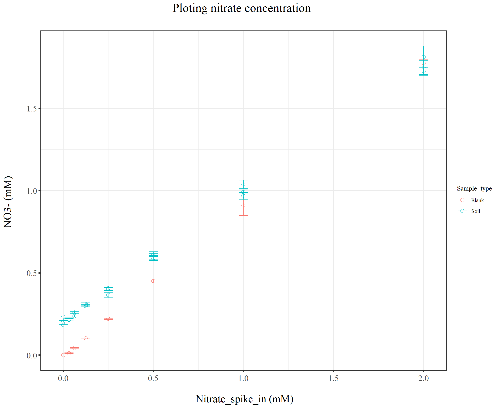
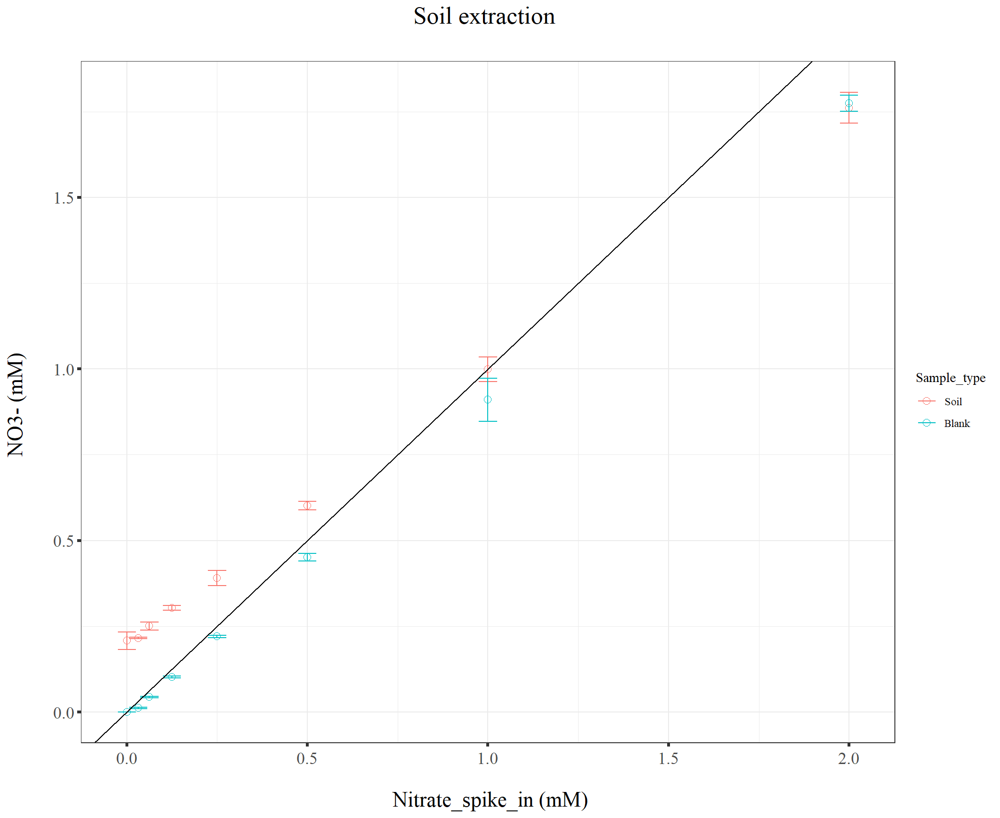
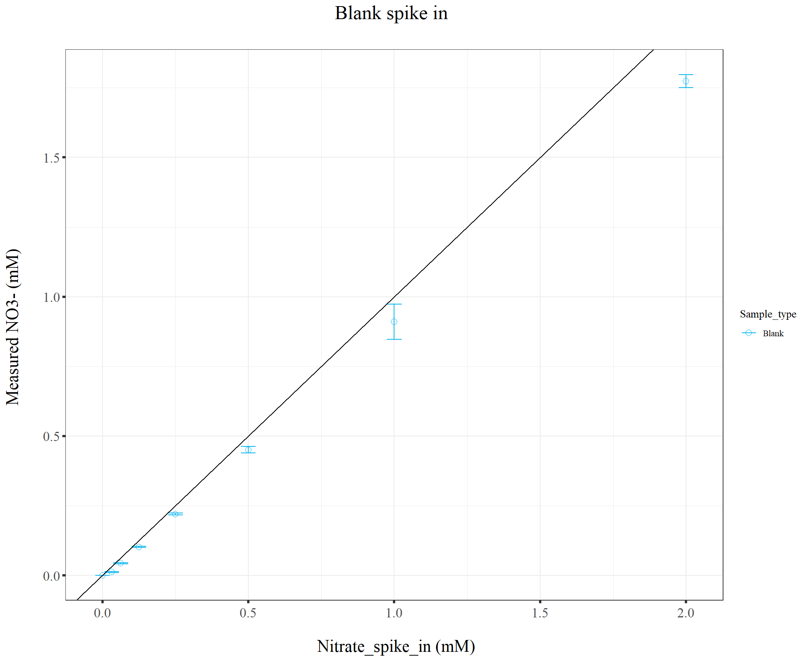
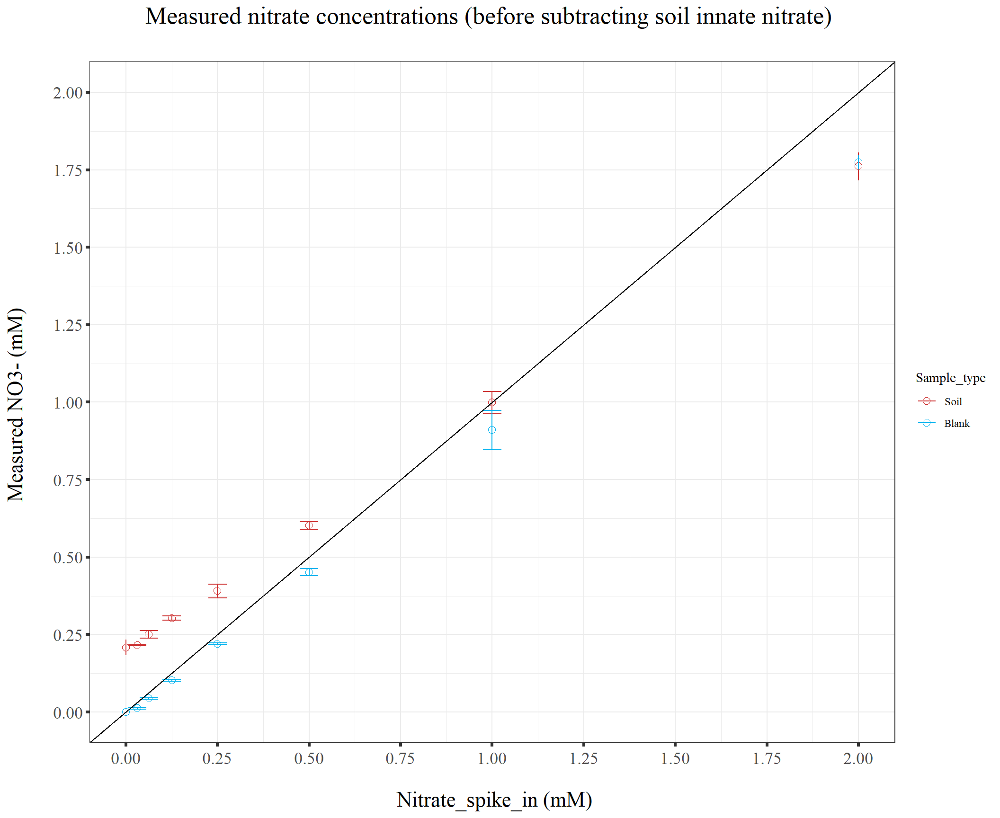
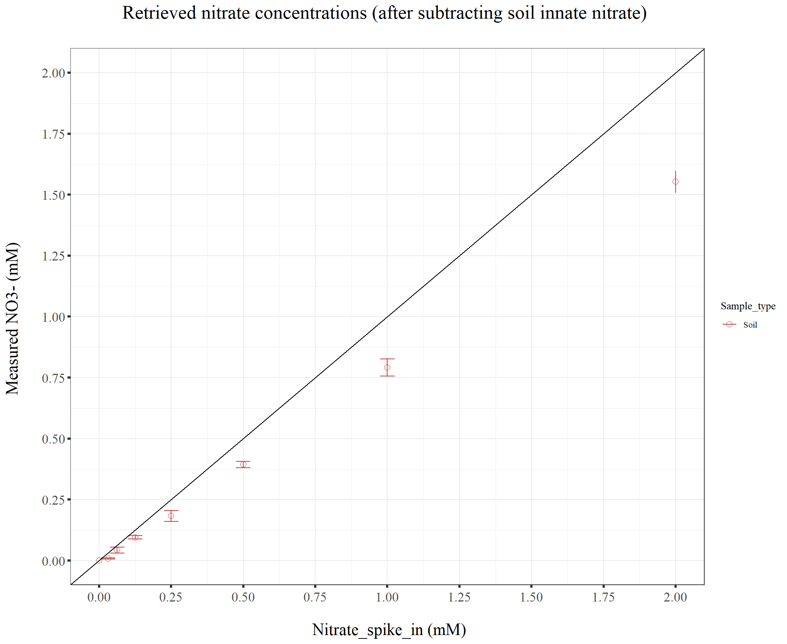
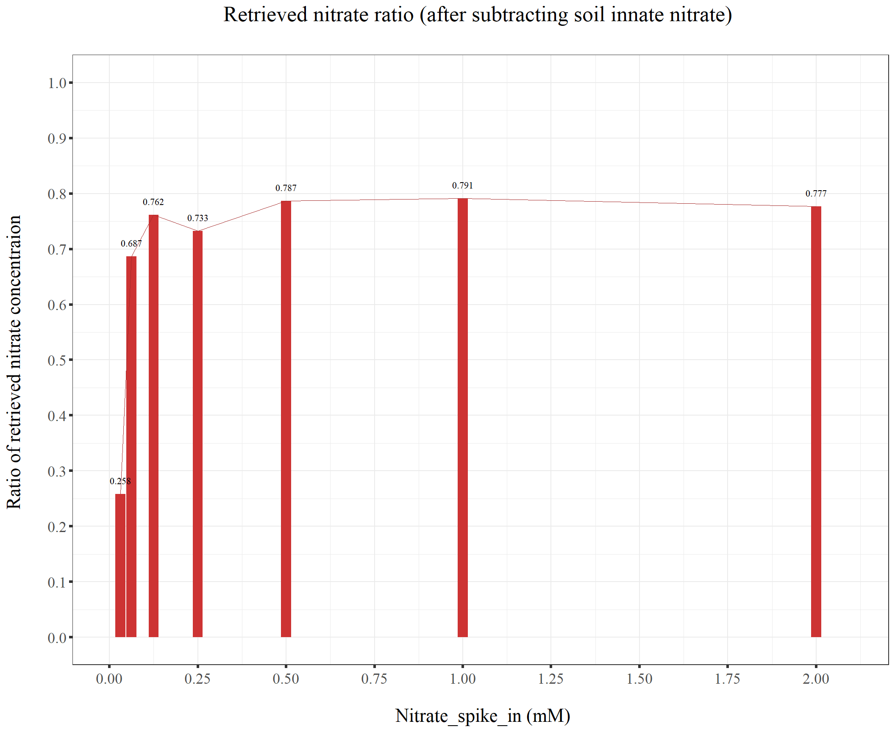

Last updated: 2022-06-08
Checks: 7 0
Knit directory: Denit_visualization_R/
This reproducible R Markdown analysis was created with workflowr (version 1.6.2). The Checks tab describes the reproducibility checks that were applied when the results were created. The Past versions tab lists the development history.
Great! Since the R Markdown file has been committed to the Git repository, you know the exact version of the code that produced these results.
Great job! The global environment was empty. Objects defined in the global environment can affect the analysis in your R Markdown file in unknown ways. For reproduciblity it’s best to always run the code in an empty environment.
The command set.seed(20210924) was run prior to running the code in the R Markdown file. Setting a seed ensures that any results that rely on randomness, e.g. subsampling or permutations, are reproducible.
Great job! Recording the operating system, R version, and package versions is critical for reproducibility.
Nice! There were no cached chunks for this analysis, so you can be confident that you successfully produced the results during this run.
Great job! Using relative paths to the files within your workflowr project makes it easier to run your code on other machines.
Great! You are using Git for version control. Tracking code development and connecting the code version to the results is critical for reproducibility.
The results in this page were generated with repository version 7905c93. See the Past versions tab to see a history of the changes made to the R Markdown and HTML files.
Note that you need to be careful to ensure that all relevant files for the analysis have been committed to Git prior to generating the results (you can use wflow_publish or wflow_git_commit). workflowr only checks the R Markdown file, but you know if there are other scripts or data files that it depends on. Below is the status of the Git repository when the results were generated:
Ignored files:
Ignored: .Rhistory
Ignored: .Rproj.user/
Untracked files:
Untracked: 211020_df_full_innate.xlsx
Untracked: 211222_df_dry_gg.xlsx
Untracked: 211222_df_dry_points.xlsx
Untracked: 220421_Griess_antibiotics_experiment_to_kyle_remove_blanks.xlsx
Untracked: 220421_Griess_antibiotics_experiment_to_kyle_remove_blanks_add_pH.xlsx
Untracked: 220421_Griess_antibiotics_experiment_to_kyle_w_autoclaved.xlsx
Untracked: 220422_pH_Antibiotics_Sterile_experiment.xlsx
Untracked: 220519_Griess_antibiotics_experiment_to_kyle_w_autoclaved.xlsx
Untracked: 220521_pH_Antibiotics_dose_effect_experiment.xlsx
Untracked: data/120321_soil_buffering_capacity_Nichols-B.xlsx
Untracked: data/210911_TOC_sample_plate1.xlsx
Untracked: data/210922_Griess_sample_plate1-investigating.xlsx
Untracked: data/210922_Griess_sample_plate1.xlsx
Untracked: data/210927_TOC_sample_plate1_100ul.xlsx
Untracked: data/210927_TOC_sample_plate1_10ul.xlsx
Untracked: data/210928_Griess_sample_plate1.xlsx
Untracked: data/211005_Griess_sample_plate1.xlsx
Untracked: data/211007_Griess_blank_plate1.xlsx
Untracked: data/211007_Griess_blank_plate2.xlsx
Untracked: data/211008_Griess_blank_plate0.xlsx
Untracked: data/211008_Griess_blank_plate1.xlsx
Untracked: data/211017_Griess_plate0.xlsx
Untracked: data/211017_Griess_plate1.xlsx
Untracked: data/211017_Griess_plate2.xlsx
Untracked: data/211017_Griess_plate3.xlsx
Untracked: data/211017_Griess_plate4.xlsx
Untracked: data/211017_Griess_plate5.xlsx
Untracked: data/211017_Griess_plate6.xlsx
Untracked: data/211017_Griess_plate7.xlsx
Untracked: data/211017_Griess_plate8.xlsx
Untracked: data/211019_Griess_plate1.xlsx
Untracked: data/211020_Griess_plate0.xlsx
Untracked: data/211020_Griess_plate1.xlsx
Untracked: data/211020_df_full_innate.xlsx
Untracked: data/211025_Griess_no3_fit_plate0.xlsx
Untracked: data/211025_Griess_no3_fit_plate1.xlsx
Untracked: data/211025_Griess_plate0.xlsx
Untracked: data/211025_Griess_plate1.xlsx
Untracked: data/211028_Griess_plate1.xlsx
Untracked: data/211028_Griess_plate1_no3_fit.xlsx
Untracked: data/211028_Griess_plate2.xlsx
Untracked: data/211028_Griess_plate2_no3_fit.xlsx
Untracked: data/211028_Griess_plate3.xlsx
Untracked: data/211028_Griess_plate3_no3_fit.xlsx
Untracked: data/211028_Griess_plate4.xlsx
Untracked: data/211028_Griess_plate4_no3_fit.xlsx
Untracked: data/211028_time_table.xlsx
Untracked: data/211127_Griess_SUP1.xlsx
Untracked: data/211127_Griess_SUP11.xlsx
Untracked: data/211127_Griess_SUP3.xlsx
Untracked: data/211127_Griess_SUP5.xlsx
Untracked: data/211127_Griess_SUP7.xlsx
Untracked: data/211127_Griess_SUP9.xlsx
Untracked: data/211127_Griess_plate0.xlsx
Untracked: data/211127_time_table.xlsx
Untracked: data/211128_Ammonia_sample_plate10.xlsx
Untracked: data/211128_Ammonia_sample_plate11.xlsx
Untracked: data/211128_Griess_plate1.xlsx
Untracked: data/211128_Griess_plate10.xlsx
Untracked: data/211128_Griess_plate11.xlsx
Untracked: data/211128_Griess_plate2.xlsx
Untracked: data/211128_Griess_plate3.xlsx
Untracked: data/211128_Griess_plate4.xlsx
Untracked: data/211128_Griess_plate5.xlsx
Untracked: data/211128_Griess_plate6.xlsx
Untracked: data/211128_Griess_plate7.xlsx
Untracked: data/211128_Griess_plate8.xlsx
Untracked: data/211128_Griess_plate9.xlsx
Untracked: data/211128_time_table.xlsx
Untracked: data/211201_pH_colorimetric.xlsx
Untracked: data/211203_slurry_vs_water_drying_table.xlsx
Untracked: data/211203_slurry_vs_water_drying_time.xlsx
Untracked: data/211208_pH_colorimetric_T3.xlsx
Untracked: data/211208_pH_colorimetric_T4.xlsx
Untracked: data/211208_pH_colorimetric_T5.xlsx
Untracked: data/211208_pH_colorimetric_plate1.xlsx
Untracked: data/211208_pH_colorimetric_plate2.xlsx
Untracked: data/211208_pH_colorimetric_plate3.xlsx
Untracked: data/211208_time_table.xlsx
Untracked: data/211209_OD600_T1.xlsx
Untracked: data/211209_OD600_T2.xlsx
Untracked: data/211209_OD600_T3.xlsx
Untracked: data/211209_time_table.xlsx
Untracked: data/211210_pH_colorimetric_T0.xlsx
Untracked: data/211210_pH_colorimetric_T1.xlsx
Untracked: data/211210_pH_colorimetric_T2.xlsx
Untracked: data/211210_pH_colorimetric_T3.xlsx
Untracked: data/211210_time_table.xlsx
Untracked: data/211218_pH_colorimetric_t0.xlsx
Untracked: data/211218_pH_colorimetric_t1.xlsx
Untracked: data/211218_pH_colorimetric_t2.xlsx
Untracked: data/211218_pH_colorimetric_t3.xlsx
Untracked: data/211218_pH_colorimetric_t4.xlsx
Untracked: data/211218_time_table.xlsx
Untracked: data/211220_Griess_plate1.xlsx
Untracked: data/211220_Griess_plate10.xlsx
Untracked: data/211220_Griess_plate11.xlsx
Untracked: data/211220_Griess_plate2.xlsx
Untracked: data/211220_Griess_plate3.xlsx
Untracked: data/211220_Griess_plate4.xlsx
Untracked: data/211220_Griess_plate5.xlsx
Untracked: data/211220_Griess_plate6.xlsx
Untracked: data/211220_Griess_plate7.xlsx
Untracked: data/211220_Griess_plate8.xlsx
Untracked: data/211220_Griess_plate9.xlsx
Untracked: data/211220_time_table_AU.xlsx
Untracked: data/211220_time_table_BN.xlsx
Untracked: data/211224_TOC_sample_plate1.xlsx
Untracked: data/220103_Griess_T0.xlsx
Untracked: data/220103_Griess_T1.xlsx
Untracked: data/220103_Griess_T11.xlsx
Untracked: data/220103_Griess_T12.xlsx
Untracked: data/220103_Griess_T2.xlsx
Untracked: data/220103_Griess_T3.xlsx
Untracked: data/220103_Griess_T4.xlsx
Untracked: data/220103_Griess_T5.xlsx
Untracked: data/220103_Griess_T6.xlsx
Untracked: data/220103_Griess_T7.xlsx
Untracked: data/220103_Griess_T8.xlsx
Untracked: data/220103_Griess_T9.xlsx
Untracked: data/220103_time_table.xlsx
Untracked: data/220106_Ammonia_sample_plate1.xlsx
Untracked: data/220107-2_Ammonia_sample_plate1.xlsx
Untracked: data/220107-3_Ammonia_sample_plate1.xlsx
Untracked: data/220107-4_Ammonia_sample_plate1.xlsx
Untracked: data/220107-5_Ammonia_sample_plate1.xlsx
Untracked: data/220107-6_Ammonia_sample_plate1.xlsx
Untracked: data/220107-7_Ammonia_sample_plate1.xlsx
Untracked: data/220107-8_Ammonia_sample_plate1.xlsx
Untracked: data/220107-9_Ammonia_sample_plate1.xlsx
Untracked: data/220107_Ammonia_sample_plate1.xlsx
Untracked: data/220108_Ammonia_sample_plate1.xlsx
Untracked: data/220110_Ammonia_sample_plate1.xlsx
Untracked: data/220110_Ammonia_sample_plate2.xlsx
Untracked: data/220111_Ammonia_sample_T0.xlsx
Untracked: data/220111_Ammonia_sample_T1.xlsx
Untracked: data/220111_Ammonia_sample_T2.xlsx
Untracked: data/220111_Ammonia_sample_T3.xlsx
Untracked: data/220111_TOC_sample_plate1.xlsx
Untracked: data/220112_Ammonia_sample_T11.xlsx
Untracked: data/220112_Ammonia_sample_T12.xlsx
Untracked: data/220112_Ammonia_sample_T4.xlsx
Untracked: data/220112_Ammonia_sample_T5.xlsx
Untracked: data/220112_Ammonia_sample_T6.xlsx
Untracked: data/220112_Ammonia_sample_T7.xlsx
Untracked: data/220112_Ammonia_sample_T8.xlsx
Untracked: data/220112_Ammonia_sample_T9.xlsx
Untracked: data/220113_pH_colorimetric_T0.xlsx
Untracked: data/220113_pH_colorimetric_T12.xlsx
Untracked: data/220113_pH_colorimetric_T2.xlsx
Untracked: data/220113_pH_colorimetric_T3.xlsx
Untracked: data/220113_pH_colorimetric_T8.xlsx
Untracked: data/220125_pH_colorimetric_pH1_mu_opt0.099.xlsx
Untracked: data/220125_pH_colorimetric_pH1_using6.66.xlsx
Untracked: data/220125_pH_colorimetric_pH2_mu_opt0.099.xlsx
Untracked: data/220125_pH_colorimetric_pH2_using6.66.xlsx
Untracked: data/220125_time_table.xlsx
Untracked: data/220128_Ammonia_sample_plate1.xlsx
Untracked: data/220128_Ammonia_sample_plate2.xlsx
Untracked: data/220128_Ammonia_sample_plate3.xlsx
Untracked: data/220128_Ammonia_sample_plate4.xlsx
Untracked: data/220128_Ammonia_sample_plate5.xlsx
Untracked: data/220128_Ammonia_sample_plate6.xlsx
Untracked: data/220128_Griess_plate1.xlsx
Untracked: data/220128_Griess_plate2.xlsx
Untracked: data/220128_Griess_plate3.xlsx
Untracked: data/220128_Griess_plate4.xlsx
Untracked: data/220128_Griess_plate5.xlsx
Untracked: data/220128_Griess_plate6.xlsx
Untracked: data/220128_time_table.xlsx
Untracked: data/220131_Ammonia_sample_plate1.xlsx
Untracked: data/220131_Ammonia_sample_plate2.xlsx
Untracked: data/220131_Ammonia_sample_plate3.xlsx
Untracked: data/220131_Ammonia_sample_plate4.xlsx
Untracked: data/220131_Ammonia_sample_plate5.xlsx
Untracked: data/220131_Ammonia_sample_plate6.xlsx
Untracked: data/220131_Griess_plate1.xlsx
Untracked: data/220131_Griess_plate2.xlsx
Untracked: data/220131_Griess_plate3.xlsx
Untracked: data/220131_Griess_plate4.xlsx
Untracked: data/220131_Griess_plate5.xlsx
Untracked: data/220131_Griess_plate6.xlsx
Untracked: data/220131_pH_colorimetric_pH1_mu_opt_T0.xlsx
Untracked: data/220131_pH_colorimetric_pH2_mu_opt_T0.xlsx
Untracked: data/220131_time_table.xlsx
Untracked: data/220327_Griess_pastplate9.xlsx
Untracked: data/220327_Griess_plate1.xlsx
Untracked: data/220327_Griess_plate10.xlsx
Untracked: data/220327_Griess_plate11.xlsx
Untracked: data/220327_Griess_plate12.xlsx
Untracked: data/220327_Griess_plate13.xlsx
Untracked: data/220327_Griess_plate14.xlsx
Untracked: data/220327_Griess_plate15.xlsx
Untracked: data/220327_Griess_plate16.xlsx
Untracked: data/220327_Griess_plate2.xlsx
Untracked: data/220327_Griess_plate3.xlsx
Untracked: data/220327_Griess_plate4.xlsx
Untracked: data/220327_Griess_plate5.xlsx
Untracked: data/220327_Griess_plate6.xlsx
Untracked: data/220327_Griess_plate7.xlsx
Untracked: data/220327_Griess_plate8.xlsx
Untracked: data/220327_Griess_plate9.xlsx
Untracked: data/220327_time_table.xlsx
Untracked: data/220329_pH_colorimetric_pH1_mu_opt_T0.xlsx
Untracked: data/220329_pH_colorimetric_pH2_mu_opt_T0.xlsx
Untracked: data/220329_pH_colorimetric_pH3_mu_opt_T0.xlsx
Untracked: data/220329_pH_colorimetric_pH4_mu_opt_T0.xlsx
Untracked: data/220329_pH_colorimetric_pH6_mu_opt_T0.xlsx
Untracked: data/220329_pH_colorimetric_pH7_mu_opt_T0.xlsx
Untracked: data/220407_pH_colorimetric_pH3_half_mu_opt_T0.xlsx
Untracked: data/220407_pH_colorimetric_pH_base_treatment_mu_opt_T0.xlsx
Untracked: data/220407_pH_colorimetric_pH_standard_150ul_mu_opt_T0.xlsx
Untracked: data/220407_pH_colorimetric_pH_standard_300ul_mu_opt_T0.xlsx
Untracked: data/220407_pH_colorimetric_pH_standard_60ul_mu_opt_T0.xlsx
Untracked: data/220408_pH_colorimetric_pH_limit_mu_opt_water.xlsx
Untracked: data/220412_pH_colorimetric_pH_half_mu_opt_WW.xlsx
Untracked: data/220414_Ammonia_sample_plate0.xlsx
Untracked: data/220418_Ammonia_sample_plate0.xlsx
Untracked: data/220419_Ammonia_sample_plate0.xlsx
Untracked: data/220420-2_Ammonia_bcf.xlsx
Untracked: data/220420_Ammonia_sample_plate1.xlsx
Untracked: data/220420_Ammonia_sample_plate10.xlsx
Untracked: data/220420_Ammonia_sample_plate11.xlsx
Untracked: data/220420_Ammonia_sample_plate12.xlsx
Untracked: data/220420_Ammonia_sample_plate13.xlsx
Untracked: data/220420_Ammonia_sample_plate14.xlsx
Untracked: data/220420_Ammonia_sample_plate15.xlsx
Untracked: data/220420_Ammonia_sample_plate16.xlsx
Untracked: data/220420_Ammonia_sample_plate2.xlsx
Untracked: data/220420_Ammonia_sample_plate3.xlsx
Untracked: data/220420_Ammonia_sample_plate4.xlsx
Untracked: data/220420_Ammonia_sample_plate5.xlsx
Untracked: data/220420_Ammonia_sample_plate6.xlsx
Untracked: data/220420_Ammonia_sample_plate7.xlsx
Untracked: data/220420_Ammonia_sample_plate8.xlsx
Untracked: data/220420_Ammonia_sample_plate9.xlsx
Untracked: data/220421_Ammonia_df_a_bcf.xlsx
Untracked: data/220421_Ammonia_df_pH_range.xlsx
Untracked: data/220421_Ammonia_sample_plate1.xlsx
Untracked: data/220421_Ammonia_sample_plate10.xlsx
Untracked: data/220421_Ammonia_sample_plate11.xlsx
Untracked: data/220421_Ammonia_sample_plate2.xlsx
Untracked: data/220421_Ammonia_sample_plate3.xlsx
Untracked: data/220421_Ammonia_sample_plate4.xlsx
Untracked: data/220421_Ammonia_sample_plate5.xlsx
Untracked: data/220421_Ammonia_sample_plate6.xlsx
Untracked: data/220421_Ammonia_sample_plate7.xlsx
Untracked: data/220421_Ammonia_sample_plate8.xlsx
Untracked: data/220421_Ammonia_sample_plate9.xlsx
Untracked: data/220421_Ammonia_sterile.xlsx
Untracked: data/220421_Griess_antibiotics_experiment_to_kyle_remove_blanks.xlsx
Untracked: data/220421_Griess_antibiotics_experiment_to_kyle_remove_blanks_add_pH.xlsx
Untracked: data/220421_Griess_plate1.xlsx
Untracked: data/220421_Griess_plate10.xlsx
Untracked: data/220421_Griess_plate11.xlsx
Untracked: data/220421_Griess_plate2.xlsx
Untracked: data/220421_Griess_plate3.xlsx
Untracked: data/220421_Griess_plate4.xlsx
Untracked: data/220421_Griess_plate5.xlsx
Untracked: data/220421_Griess_plate6.xlsx
Untracked: data/220421_Griess_plate7.xlsx
Untracked: data/220421_Griess_plate8.xlsx
Untracked: data/220421_Griess_plate9.xlsx
Untracked: data/220421_nitrate_reduced_autoclaved_samples.xlsx
Untracked: data/220421_time_table.xlsx
Untracked: data/220422_pH_Antibiotics_Sterile_experiment.xlsx
Untracked: data/220422_pH_colorimetric_LBA_Sterile_T0_mu_opt_T0.xlsx
Untracked: data/220422_pH_colorimetric_LBA_Sterile_T4_mu_opt_T0.xlsx
Untracked: data/220422_pH_colorimetric_LBA_Sterile_T4_mu_opt_T4.xlsx
Untracked: data/220422_pH_colorimetric_LBA_Sterile_T7_mu_opt_T0.xlsx
Untracked: data/220422_pH_colorimetric_LBA_Sterile_T7_mu_opt_T7.xlsx
Untracked: data/220422_pH_colorimetric_LBA_Sterile_T9_mu_opt_T0.xlsx
Untracked: data/220422_pH_colorimetric_LBA_Sterile_T9_mu_opt_T9.xlsx
Untracked: data/220508_TOC_sample_plate1.xlsx
Untracked: data/220513_TOC_sample_plate1.xlsx
Untracked: data/220513_TOC_sample_plate2.xlsx
Untracked: data/220513_TOC_sample_plate3.xlsx
Untracked: data/220517_time_table.xlsx
Untracked: data/220519_Griess_antibiotics_dose_experiment_remove_blanks.xlsx
Untracked: data/220519_Griess_crerar7_extreme.xlsx
Untracked: data/220519_Griess_plate1.xlsx
Untracked: data/220519_Griess_plate10.xlsx
Untracked: data/220519_Griess_plate11.xlsx
Untracked: data/220519_Griess_plate2.xlsx
Untracked: data/220519_Griess_plate3.xlsx
Untracked: data/220519_Griess_plate4.xlsx
Untracked: data/220519_Griess_plate5.xlsx
Untracked: data/220519_Griess_plate6.xlsx
Untracked: data/220519_Griess_plate7.xlsx
Untracked: data/220519_Griess_plate8.xlsx
Untracked: data/220519_Griess_plate9.xlsx
Untracked: data/220519_time_table.xlsx
Untracked: data/220520_TOC_sample_plate1.xlsx
Untracked: data/220520_TOC_sample_plate2.xlsx
Untracked: data/220520_TOC_sample_plate3.xlsx
Untracked: data/220521_pH_Antibiotics_dose_effect_experiment.xlsx
Untracked: data/220521_pH_colorimetric_Barneveld2_Sterile_T0_mu_opt_T0.xlsx
Untracked: data/220521_pH_colorimetric_Barneveld2_Sterile_T10_mu_opt_T0.xlsx
Untracked: data/220521_pH_colorimetric_Barneveld2_Sterile_T7_mu_opt_T0.xlsx
Untracked: data/220526_TOC_sample_plate1.xlsx
Untracked: data/220527_TOC_sample_plate1.xlsx
Untracked: data/220601_TOC_sample_plate1.xlsx
Untracked: data/220602-2_TOC_sample_plate1.xlsx
Untracked: data/220602-2_control_OD600.xlsx
Untracked: data/220602-3_TOC_sample_plate1.xlsx
Untracked: data/220602-3_control_OD600.xlsx
Untracked: data/220602_TOC_sample_plate1.xlsx
Untracked: data/220603_100ul_OD600.xlsx
Untracked: data/220603_TOC_sample_plate1.xlsx
Untracked: data/220603_TOC_sample_plate2.xlsx
Untracked: data/220606_TOC_sample_plate1.xlsx
Untracked: data/220606_TOC_sample_plate2.xlsx
Untracked: data/ForKiseok_from_Dr_Cuhel.xlsx
Untracked: data/ForKiseok_from_Dr_Cuhel_format_edited.xlsx
Untracked: data/OD434_OD585_C_WB_T5_220329.xlsx
Untracked: data/OD434_OD585_WW_C_T0_220329.xlsx
Untracked: data/OD434_OD585_pH3_half_area_220407.xlsx
Untracked: data/OD434_OD585_pH_base_treated_T0_220407.xlsx
Untracked: data/OD434_OD585_pH_half_150ul_220412.xlsx
Untracked: data/SPNa_86437_021122_edit.xlsx
Untracked: data/SPNa_86437_021122_edit2.xlsx
Untracked: data/TOC_TN_measurement_2_labs_211014.xlsx
Untracked: data/dry_weight_curve(9.5.21).xlsx
Untracked: data/pH_data(11.17.21)-Midway_etc.xlsx
Untracked: data/pH_data(12.6.21)-Midway_incubation_endpoint.xlsx
Untracked: data/pH_data(9.14.21).xlsx
Untracked: data/pH_data(9.28.21).xlsx
Untracked: data/pH_standard_150ul_220407.xlsx
Untracked: data/pH_standard_300ul_220407.xlsx
Untracked: data/pH_standard_60ul_220407.xlsx
Untracked: data/~$220513_TOC_sample_plate1.xlsx
Untracked: data/~$SPNa_86437_021122_edit.xlsx
Untracked: past_figures/
Note that any generated files, e.g. HTML, png, CSS, etc., are not included in this status report because it is ok for generated content to have uncommitted changes.
These are the previous versions of the repository in which changes were made to the R Markdown (analysis/Soil_extraction_2MKCl_Griess.Rmd) and HTML (docs/Soil_extraction_2MKCl_Griess.html) files. If you’ve configured a remote Git repository (see ?wflow_git_remote), click on the hyperlinks in the table below to view the files as they were in that past version.
| File | Version | Author | Date | Message |
|---|---|---|---|---|
| html | b7a27fc | KiseokUchicago | 2021-11-17 | Build site. |
| html | a07efe3 | KiseokUchicago | 2021-11-05 | Build site. |
| html | 3032cf3 | KiseokUchicago | 2021-10-21 | Build site. |
| html | 9275f67 | KiseokUchicago | 2021-10-21 | Build site. |
| html | d49c1e8 | KiseokUchicago | 2021-10-14 | Build site. |
| Rmd | 77a9acc | KiseokUchicago | 2021-10-14 | wflow_publish("analysis/*.Rmd") |
| html | 9d23c75 | KiseokUchicago | 2021-10-08 | Build site. |
| html | d208470 | KiseokUchicago | 2021-10-08 | Build site. |
| html | ae8de17 | KiseokUchicago | 2021-10-08 | Build site. |
| Rmd | f0fe610 | KiseokUchicago | 2021-10-08 | wflow_publish("analysis/*.Rmd") |
Researcher: Kiseok Lee
Data: 10/6/21
Lab: Seppe Kuehn
# libraries
library(dplyr)
library(ggplot2)
library(RColorBrewer)
library(vegan)
library(tidyverse)
library(magrittr)
library(readxl)
library(reshape2)
library(gtools)
library(devtools)
library(openxlsx)
library(ape)
library(stringr)
library(tidyr)
## theme for ggplot
mytheme <- theme_bw() +
theme(text = element_text(family="serif")) +
theme(plot.title = element_text(size = 19,hjust = 0.5, family="serif")) +
theme(axis.title.x = element_text(size = 17,hjust = 0.5, family="serif")) +
theme(axis.title.y = element_text(size = 17,hjust = 0.5, family="serif")) +
theme(axis.text.x = element_text(hjust = 0.5, vjust=0.3,size=13, family="serif"))+
theme(axis.text.y = element_text(size=10, family="serif"))+
theme(panel.grid.major = element_blank()) +
theme(panel.grid.minor = element_blank(),panel.background=element_blank(),panel.border=element_blank(),plot.background=element_blank()) +
theme(axis.ticks = element_line(size = 1.1))
mytheme_2d <- theme_bw() +
theme(text = element_text(family="serif")) +
theme(plot.title = element_text(size = 19,hjust = 0.5, family="serif")) +
theme(axis.title.x = element_text(size = 17,hjust = 0.5, family="serif")) +
theme(axis.title.y = element_text(size = 17,hjust = 0.5, family="serif")) +
theme(axis.text.x = element_text(hjust = 0.5, vjust=0.3,size=13, family="serif"))+
theme(axis.text.y = element_text(size=13, family="serif"))+
# theme(panel.grid.major = element_blank()) +
# theme(panel.grid.minor = element_blank(),panel.background=element_blank(),plot.background=element_blank()) +
theme(axis.ticks = element_line(size = 1.1))
# color collection
my_color_collection <- c(
"#CBD588", "#5F7FC7", "orange", "#AD6F3B", "#673770",
"#D14285", "#652926", "#C84248", "#8569D5", "#5E738F",
"#D1A33D", "#8A7C64", "#599861","#616163", "#FFCDB2",
"#6D9F71", "#242F40",
"#CCA43B", "#F92A82", "#ED7B84", "#7EB77F",
"#DEC4A1", "#E5D1D0", '#0E8482', '#C9DAEA', '#337357',
'#95C623', '#E55812', '#04471C', '#F2D7EE', '#D3BCC0',
'#A5668B', '#69306D', '#0E103D', '#1A535C', '#4ECDC4',
'#F7FFF7', '#FF6B6B', '#FFE66D', '#6699CC', '#FFF275',
'#FF8C42', '#FF3C38', '#A23E48', '#000000', '#CF5C36',
'#EEE5E9', '#7C7C7C', '#EFC88B', '#2E5266', '#6E8898',
'#9FB1BC', '#D3D0CB', '#E2C044', '#5BC0EB', '#FDE74C',
'#9BC53D', '#E55934', '#FA7921', "#CD9BCD", "#508578", "#DA5724")
# for git push, use this instead of using wflow_git_push()
# git push -u origin master (in the Git app / in the working directory)We need to remove well H06, H09. Didn’t have enough samples for that well.
# import file
df_kcl <- openxlsx::read.xlsx("data/211005_Griess_sample_plate1.xlsx")
class(df_kcl)[1] "data.frame"head(df_kcl) Well Sample Time_point Nitrate_input Sample_type Biological_replicate
1 A01 T0_2mM_Soil_A 0 2 Soil A
2 A02 T0_2mM_Soil_B 0 2 Soil B
3 A03 T0_2mM_Soil_C 0 2 Soil C
4 A04 T0_2mM_Soil_A 0 2 Soil A
5 A05 T0_2mM_Soil_B 0 2 Soil B
6 A06 T0_2mM_Soil_C 0 2 Soil C
Plate NO2_OD540 NO2NO3_OD540 NO2_mM NO2NO3_mM NO3_mM
1 P1 0.00870 1.69645 0.01359583 1.892543 1.878948
2 P1 0.00745 1.59965 0.01304320 1.765437 1.752393
3 P1 0.00560 1.62695 0.01222541 1.800955 1.788730
4 P1 0.00920 1.59490 0.01381690 1.759282 1.745465
5 P1 0.00860 1.57165 0.01355162 1.729267 1.715715
6 P1 0.00630 1.59625 0.01253483 1.761031 1.748496colnames(df_kcl) [1] "Well" "Sample" "Time_point"
[4] "Nitrate_input" "Sample_type" "Biological_replicate"
[7] "Plate" "NO2_OD540" "NO2NO3_OD540"
[10] "NO2_mM" "NO2NO3_mM" "NO3_mM" # remove NA
dim(df_kcl)[1] 96 12df_kcl <- na.omit(df_kcl)
dim(df_kcl)[1] 96 12# Check
df_kcl %>% filter(Well =="H06") Well Sample Time_point Nitrate_input Sample_type Biological_replicate
1 H06 T0_0mM_Soil_C 0 0 Soil C
Plate NO2_OD540 NO2NO3_OD540 NO2_mM NO2NO3_mM NO3_mM
1 P1 0.00695 0.0026 0.01282216 0.004401687 0df_kcl %>% filter(Well =="H09") Well Sample Time_point Nitrate_input Sample_type Biological_replicate
1 H09 T0_0mM_Soil_C 0 0 Soil C
Plate NO2_OD540 NO2NO3_OD540 NO2_mM NO2NO3_mM NO3_mM
1 P1 0.0067 0 0.01271165 0.001907941 0# remove wells H06, H09
df_kcl %<>% filter(!(Well %in% c("H06","H09")))
dim(df_kcl)[1] 94 12# average and standard deviation
head(df_kcl) Well Sample Time_point Nitrate_input Sample_type Biological_replicate
1 A01 T0_2mM_Soil_A 0 2 Soil A
2 A02 T0_2mM_Soil_B 0 2 Soil B
3 A03 T0_2mM_Soil_C 0 2 Soil C
4 A04 T0_2mM_Soil_A 0 2 Soil A
5 A05 T0_2mM_Soil_B 0 2 Soil B
6 A06 T0_2mM_Soil_C 0 2 Soil C
Plate NO2_OD540 NO2NO3_OD540 NO2_mM NO2NO3_mM NO3_mM
1 P1 0.00870 1.69645 0.01359583 1.892543 1.878948
2 P1 0.00745 1.59965 0.01304320 1.765437 1.752393
3 P1 0.00560 1.62695 0.01222541 1.800955 1.788730
4 P1 0.00920 1.59490 0.01381690 1.759282 1.745465
5 P1 0.00860 1.57165 0.01355162 1.729267 1.715715
6 P1 0.00630 1.59625 0.01253483 1.761031 1.748496dim(df_kcl)[1] 94 12colnames(df_kcl) [1] "Well" "Sample" "Time_point"
[4] "Nitrate_input" "Sample_type" "Biological_replicate"
[7] "Plate" "NO2_OD540" "NO2NO3_OD540"
[10] "NO2_mM" "NO2NO3_mM" "NO3_mM" # average technical replicate
df_NO2NO3 <- df_kcl %>% group_by(Sample, Time_point, Nitrate_input, Sample_type, Biological_replicate, Plate) %>% summarise(Ave_NO2_mM = mean(NO2_mM), Std_NO2_mM = sd(NO2_mM), Ave_NO3_mM = mean(NO3_mM), Std_NO3_mM = sd(NO3_mM)) %>% ungroup()
# plot to see
ggplot(df_NO2NO3, aes(x=Nitrate_input, y=Ave_NO3_mM, color=Sample_type, group=Sample_type)) +
geom_point(size=2.5, shape=21) +
# geom_line(size=1)+
geom_errorbar(aes(ymin=Ave_NO3_mM - Std_NO3_mM, ymax=Ave_NO3_mM + Std_NO3_mM), width=.05)+
scale_fill_brewer(palette='Set2') +
ylab("NO3- (mM) \n") +
xlab("\n Nitrate_spike_in (mM)") +
# scale_y_continuous(breaks = seq(0,0.3,0.05), limits=c(0, 0.3))+
ggtitle("Ploting nitrate concentration \n") +
mytheme_2d
# average biological replicates & standard deviation is the standard deviation of the technical replicate average
dim(df_NO2NO3)[1] 32 10# we need to separate water from soil samples. Blank samples have no biological replicates.
df_blank <- df_NO2NO3 %>% filter(Sample_type == "Blank") %>% rename(NO2_mM = Ave_NO2_mM, sd_NO2_mM = Std_NO2_mM, NO3_mM = Ave_NO3_mM, sd_NO3_mM = Std_NO3_mM) %>% select(-Sample, -Biological_replicate)
dim(df_blank)[1] 8 8colnames(df_blank)[1] "Time_point" "Nitrate_input" "Sample_type" "Plate"
[5] "NO2_mM" "sd_NO2_mM" "NO3_mM" "sd_NO3_mM" df_soil <- df_NO2NO3 %>% filter(Sample_type == "Soil")
df_sample <- df_soil %>% group_by(Time_point, Nitrate_input, Sample_type, Plate) %>% summarise(NO2_mM = mean(Ave_NO2_mM), sd_NO2_mM = sd(Ave_NO2_mM), NO3_mM = mean(Ave_NO3_mM), sd_NO3_mM = sd(Ave_NO3_mM)) %>% ungroup()
dim(df_sample)[1] 8 8colnames(df_sample)[1] "Time_point" "Nitrate_input" "Sample_type" "Plate"
[5] "NO2_mM" "sd_NO2_mM" "NO3_mM" "sd_NO3_mM" colnames(df_blank)[1] "Time_point" "Nitrate_input" "Sample_type" "Plate"
[5] "NO2_mM" "sd_NO2_mM" "NO3_mM" "sd_NO3_mM" df_all <- rbind(df_sample, df_blank)
# Factor in orders
df_all$Sample_type <- factor(df_all$Sample_type, levels = c("Soil","Blank"))
# plot to see
ggplot(df_all, aes(x=Nitrate_input, y=NO3_mM, color=Sample_type, group=Sample_type)) +
geom_point(size=2.5, shape=21) +
# geom_line(size=1)+
geom_errorbar(aes(ymin=NO3_mM - sd_NO3_mM, ymax=NO3_mM + sd_NO3_mM), width=.05)+
scale_fill_brewer(palette='Set2') +
ylab("NO3- (mM) \n") +
xlab("\n Nitrate_spike_in (mM)") +
# scale_y_continuous(breaks = seq(-1,2,0.05), limits=c(0, 2))+
ggtitle("Soil extraction \n") +
geom_abline(slope = 1, intercept = 0, color = "black") +
mytheme_2d
# Plot only the blank (without soil) samples
df_blank# A tibble: 8 x 8
Time_point Nitrate_input Sample_type Plate NO2_mM sd_NO2_mM NO3_mM sd_NO3_mM
<dbl> <dbl> <chr> <chr> <dbl> <dbl> <dbl> <dbl>
1 0 0.0312 Blank P1 0.0121 0.000511 0.0119 0.00234
2 0 0.0625 Blank P1 0.0121 0.000535 0.0437 0.00193
3 0 0.125 Blank P1 0.0126 0.000408 0.102 0.00240
4 0 0.25 Blank P1 0.0118 0.000510 0.220 0.00342
5 0 0.5 Blank P1 0.0120 0.000211 0.451 0.0114
6 0 0 Blank P1 0.0134 0.0000338 0 0
7 0 1 Blank P1 0.0120 0.000248 0.910 0.0629
8 0 2 Blank P1 0.0120 0.000444 1.77 0.0235 ggplot(df_blank, aes(x=Nitrate_input, y=NO3_mM, color=Sample_type, group=Sample_type)) +
geom_point(size=2.5, shape=21) +
# geom_line(size=1)+
geom_errorbar(aes(ymin=NO3_mM - sd_NO3_mM, ymax=NO3_mM + sd_NO3_mM), width=.05)+
# scale_color_brewer(palette='Set2') +
scale_color_manual(values = "deepskyblue2")+
ylab("Measured NO3- (mM) \n") +
xlab("\n Nitrate_spike_in (mM)") +
# scale_y_continuous(breaks = seq(0,2.1,0.25), limits=c(0, 2))+
# scale_x_continuous(breaks = seq(0,2.1,0.25), limits=c(0, 2))+
ggtitle("Blank spike in \n") +
geom_abline(slope = 1, intercept=0, show.legend = "y=x")+
mytheme_2d
# Plot the soil & blank samples (before subtracting soil innate nitrate)
ggplot(df_all, aes(x=Nitrate_input, y=NO3_mM, color=Sample_type, group=Sample_type)) +
geom_point(size=2.5, shape=21) +
# geom_line(size=1)+
geom_errorbar(aes(ymin=NO3_mM - sd_NO3_mM, ymax=NO3_mM + sd_NO3_mM), width=.05)+
# scale_fill_brewer(palette='Set2') +
scale_color_manual(values = c("brown3","deepskyblue2"))+
ylab("Measured NO3- (mM) \n") +
xlab("\n Nitrate_spike_in (mM)") +
scale_y_continuous(breaks = seq(0,2.1,0.25), limits=c(0, 2))+
scale_x_continuous(breaks = seq(0,2.1,0.25), limits=c(0, 2))+
ggtitle("Measured nitrate concentrations (before subtracting soil innate nitrate) \n") +
geom_abline(slope = 1, intercept=0, show.legend = "y=x")+
mytheme_2d
# subtract innate nitrate
df_soil2 <- df_all %>% filter(Sample_type == "Soil")
innate_no3 <- df_soil2 %>% filter(Nitrate_input == 0) %>% select(NO3_mM) %>% unlist()
df_soil2$Retrieved_NO3_mM <- df_soil2$NO3_mM - innate_no3
ggplot(df_soil2, aes(x=Nitrate_input, y=Retrieved_NO3_mM, color=Sample_type, group=Sample_type)) +
geom_point(size=2.5, shape=21) +
# geom_line(size=1)+
geom_errorbar(aes(ymin=Retrieved_NO3_mM - sd_NO3_mM, ymax=Retrieved_NO3_mM + sd_NO3_mM), width=.05)+
# scale_fill_brewer(palette='Set2') +
scale_color_manual(values = c("brown3","deepskyblue2"))+
ylab("Measured NO3- (mM) \n") +
xlab("\n Nitrate_spike_in (mM)") +
scale_y_continuous(breaks = seq(0,2.1,0.25), limits=c(0, 2))+
scale_x_continuous(breaks = seq(0,2.1,0.25), limits=c(0, 2))+
ggtitle("Retrieved nitrate concentrations (after subtracting soil innate nitrate) \n") +
geom_abline(slope = 1, intercept=0, show.legend = "y=x")+
mytheme_2d
# Retrieved ratio of spike ins
df_soil2$Ratio_retrieved <- df_soil2$Retrieved_NO3_mM / df_soil2$Nitrate_input
ggplot(df_soil2, aes(x=Nitrate_input, y=Ratio_retrieved)) + ## I put fill=value which was wrong
geom_bar(stat="identity",position="dodge", fill="brown3")+
geom_line(size=0.2, color="brown")+
ylab("Ratio of retrieved nitrate concentraion \n") +
xlab("\n Nitrate_spike_in (mM)") +
scale_y_continuous(breaks = seq(0,1,0.1), limits=c(0, 1))+
scale_x_continuous(breaks = seq(0,2.1,0.25), limits=c(0, 2.1))+
ggtitle("Retrieved nitrate ratio (after subtracting soil innate nitrate) \n") +
geom_text(aes(label = round(Ratio_retrieved,3)), size = 3, vjust = -1.5, family="serif", show.legend = FALSE)+
mytheme_2d
sessionInfo()R version 4.0.3 (2020-10-10)
Platform: x86_64-w64-mingw32/x64 (64-bit)
Running under: Windows 10 x64 (build 22000)
Matrix products: default
locale:
[1] LC_COLLATE=English_United States.1252
[2] LC_CTYPE=English_United States.1252
[3] LC_MONETARY=English_United States.1252
[4] LC_NUMERIC=C
[5] LC_TIME=English_United States.1252
attached base packages:
[1] stats graphics grDevices utils datasets methods base
other attached packages:
[1] ape_5.5 openxlsx_4.2.3 devtools_2.4.0 usethis_2.0.1
[5] gtools_3.8.2 reshape2_1.4.4 readxl_1.3.1 magrittr_2.0.1
[9] forcats_0.5.1 stringr_1.4.0 purrr_0.3.4 readr_1.4.0
[13] tidyr_1.1.3 tibble_3.0.4 tidyverse_1.3.1 vegan_2.5-7
[17] lattice_0.20-41 permute_0.9-5 RColorBrewer_1.1-2 ggplot2_3.3.5
[21] dplyr_1.0.5 workflowr_1.6.2
loaded via a namespace (and not attached):
[1] nlme_3.1-149 fs_1.5.0 lubridate_1.7.10 httr_1.4.2
[5] rprojroot_2.0.2 tools_4.0.3 backports_1.2.1 bslib_0.2.5.1
[9] utf8_1.1.4 R6_2.5.0 DBI_1.1.1 mgcv_1.8-33
[13] colorspace_2.0-0 withr_2.4.2 prettyunits_1.1.1 processx_3.5.1
[17] tidyselect_1.1.1 compiler_4.0.3 git2r_0.28.0 cli_3.0.1
[21] rvest_1.0.1 xml2_1.3.2 desc_1.3.0 labeling_0.4.2
[25] sass_0.4.0 scales_1.1.1 callr_3.7.0 digest_0.6.27
[29] rmarkdown_2.9 pkgconfig_2.0.3 htmltools_0.5.1.1 sessioninfo_1.1.1
[33] highr_0.9 dbplyr_2.1.1 fastmap_1.1.0 rlang_0.4.10
[37] rstudioapi_0.13 farver_2.1.0 jquerylib_0.1.4 generics_0.1.0
[41] jsonlite_1.7.2 zip_2.1.1 Matrix_1.2-18 Rcpp_1.0.8.3
[45] munsell_0.5.0 fansi_0.4.2 lifecycle_1.0.0 stringi_1.5.3
[49] whisker_0.4 yaml_2.2.1 MASS_7.3-53 pkgbuild_1.2.0
[53] plyr_1.8.6 grid_4.0.3 parallel_4.0.3 promises_1.2.0.1
[57] crayon_1.4.1 haven_2.4.1 splines_4.0.3 hms_1.1.0
[61] ps_1.6.0 knitr_1.37 pillar_1.6.0 pkgload_1.2.1
[65] reprex_2.0.0 glue_1.4.2 evaluate_0.14 remotes_2.4.0
[69] modelr_0.1.8 vctrs_0.3.8 httpuv_1.6.0 testthat_3.0.2
[73] cellranger_1.1.0 gtable_0.3.0 assertthat_0.2.1 cachem_1.0.4
[77] xfun_0.29 broom_0.7.9 later_1.2.0 memoise_2.0.0
[81] cluster_2.1.0 ellipsis_0.3.2